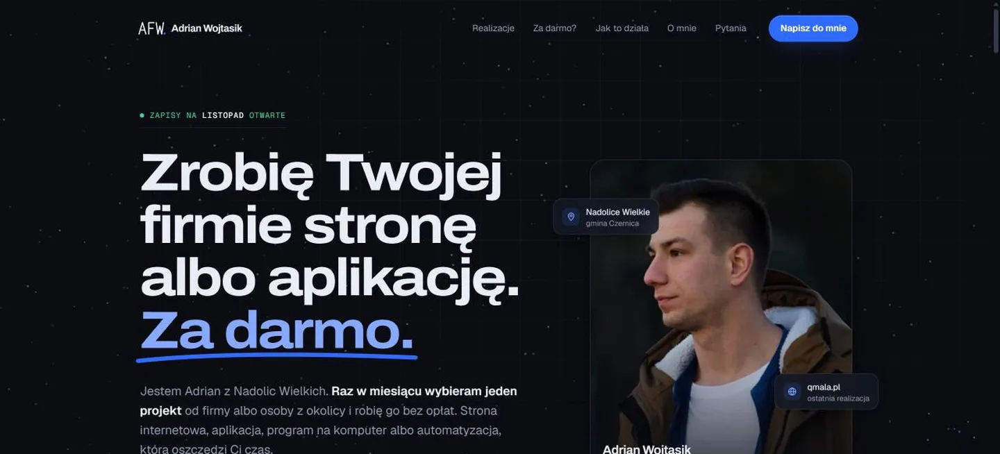
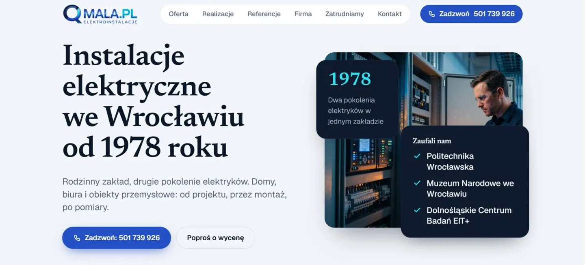
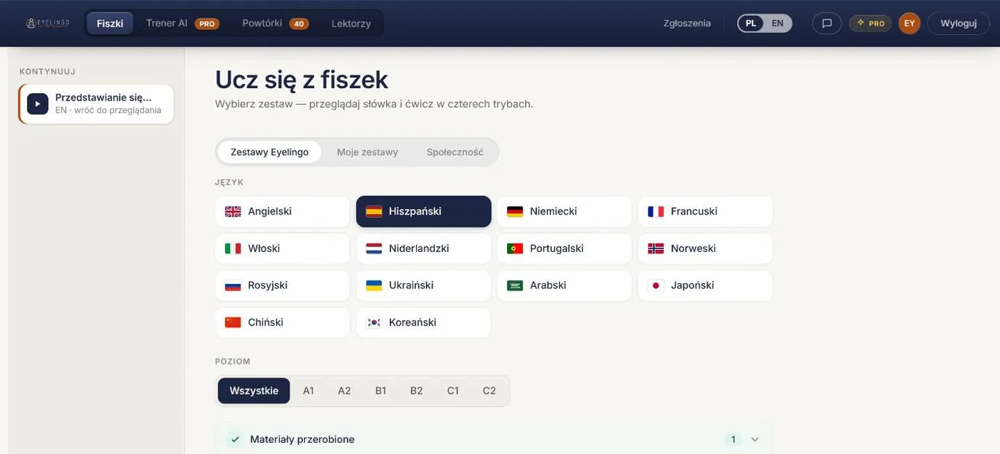
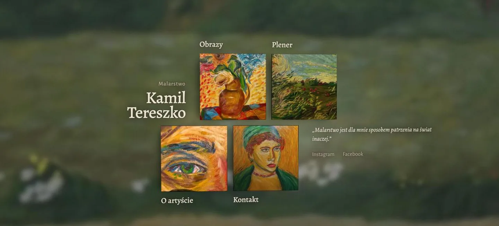

Każda stronama swoją historię.
Dla każdego projektu piszę, co zrobiłem i dlaczego właśnie tak. Kliknij, żeby zobaczyć stronę na żywo.

mogetopomoge.pl
Strona mojego programu pro bono. Raz w miesiącu wybieram jedną firmę i robię jej za darmo stronę, aplikację w przeglądarce, program albo automatyzację. Firma zachowuje pełne prawa do wszystkiego, co powstanie.
Dlaczego: wiele małych firm robi świetną robotę, a w internecie w ogóle jej nie widać. Ta strona pokazuje też, jak pracuję, zanim ktokolwiek zapłaci złotówkę.
- Zakres
- projekt, kod, treści, zasady naboru
- Dla kogo
- lokalne firmy bez budżetu na stronę

PolfinansGrupa Partnerska
Multiagencja ubezpieczeniowa z Wrocławia, od około 30 lat na rynku. Powstała strona z sześcioma kategoriami ubezpieczeń, czterema krokami współpracy i pomocą przy szkodzie.
Z tego projektu jestem najbardziej dumny, bo prowadziłem go od pierwszej rozmowy po ostatni przycisk.
- Zakres
- projekt, kod, treści
- Branża
- ubezpieczenia

qmala.pl
Elektrycy z Wrocławia działający od 1978 roku. Strona ma szybko powiedzieć, co robią, i ułatwić telefon.
Zobacz qmala.pl
Eyelingo
Platforma do nauki 14 języków, od A1 do C2. Fiszki pojawiają się w tle, podczas zwykłej pracy przy komputerze. Projektuję ją, buduję i rozwijam sam.
Zobacz eyelingo.appInne projekty
